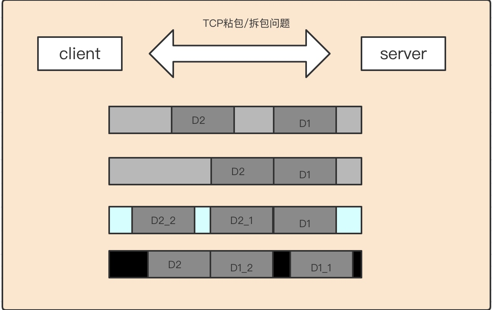
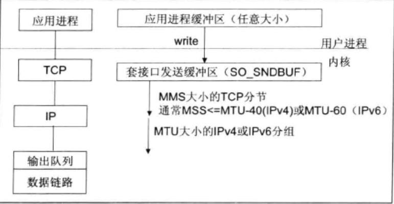

TCP底层并不了解上层业务数据的具体含义，它会根据TCP缓冲区的实际情况进行包的划分，即滑动窗口的概念。所以一个完整的业务包可能会被TCP拆分成多个包进行发送，也有可能把多个晓得包封装成一个大的数据包发送，这就是所谓的TCP粘包与拆包问题。
TCP粘包与拆包问题说明

假设客户端分别发送了两个数据包D1 和D2给服务端，由于服务端一次读取到的字节数是不确定的，故可能存在以下4种情况：
服务端分两次读取到了两个独立的数据包 D1 和 D2 ，没有 粘包与拆包
服务端一次接收到了两个数据包，D1和D2粘合在一起，被称为TCP粘包
服务端分两次读取到了两个数据包，第一次读取到了完整的D1 包和D2包的部分内容，第二次读取到了 D2 包的剩余内容，这被称为 TCP拆包
服务端分两次读取到了两个数据包，第一次读取到了D1包的部分内容 D1_1 ，第二次读取到了D1包的剩余内容 D1_2 和 D2 包的整包。
如果此时服务端 tcp 接收 滑窗 非常小，而数据包 D1 和 D2 比较大，很有可能会发生第5种情况，即服务端分多次才能将D1和D2包 接受完全，期间发生多次拆包。
TCP 粘包/拆包发生的原因
由于 TCP 协议本身的机制(面向连接的可靠地协议-三次握手机制)客户端与服务器会 维持一个连接(Channel)，数据在连接不断开的情况下，可以持续不断地将多个数据包发 往服务器，但是如果发送的网络数据包太小，那么他本身会启用 Nagle 算法(可配置是否启 用)对较小的数据包进行合并(基于此，TCP 的网络延迟要 UDP 的高些)然后再发送(超时或者包大小足够)。
那么这样的话，服务器在接收到消息(数据流)的时候就无法区分哪些数据包是客户端自己分开发送的，这样产生了拆包; 服务器在接收到数据库后，放到缓冲区中，如果消息没有被及时从缓存区取走，下次在取数据的时候可能就会出现一次取出多个数据包的情况，造成粘包现象
总归涞水问题产生的原因有三个：
应用程序write 写入的字节大小大于套接口发送缓冲区大小
进行 MSS 大小的 TCP 分段。
以太网帧的payload 大于 MTU 进行 IP 分片。

粘包问题的解决策略
由于底层的 TCP 无法理解上层的业务数据，所以在底层是无法保证数据包不被拆分和重组的，这个问题只能通过上层的应用协议栈设计来解决，根据业界的主流协议的解决方案，可以归纳如下：
消息定长，例如每个报文的大小为固定长度200字节，如果不够，空位补空格
在包尾增加回车换行符作为消息结束符，例如 FTP协议，在文本协议中应用比较广泛
将特殊的分隔符作为消息的结束标志，回车换行符就是一种特殊的结束分隔符
将消息分为消息头和消息体，消息头中包含消息总长度（或者消息体长度）的字段，通常设计思路为消息头的第一个字段使用 int32 来表示消息的总长度
更复杂的应用层协议